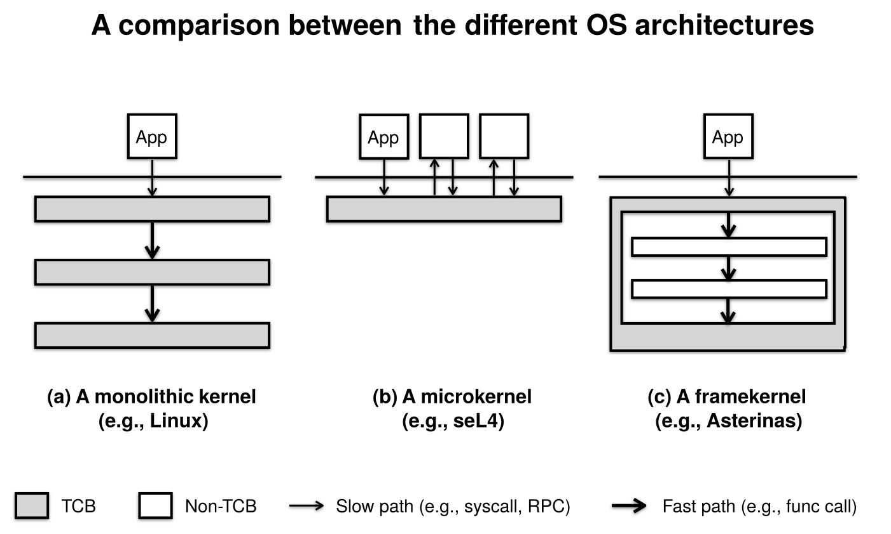

The Asterinas Book

Welcome to the documentation for Asterinas, an open-source project and community focused on developing cutting-edge Rust OS kernels.
Book Structure
This book is divided into five distinct parts:
Part 1: Asterinas Kernel
Explore the modern OS kernel at the heart of Asterinas. Designed to realize the full potential of Rust, Asterinas Kernel implements Linux ABI in a safe and efficient way. This means it can seamlessly replace Linux, offering enhanced safety and security.
Part 2: Asterinas Framework
The Framework lays down a minimalistic, powerful, and solid foundation
for OS development.
It's akin to Rust's std crate
but crafted for the demands of safe Rust OS development.
Asterinas Kernel is built on this very Framework.
Part 3: Asterinas OSDK
The OSDK is a command-line tool that streamlines the workflow to create, build, test, and run Rust OS projects that are built upon Asterinas Framework. Developed specifically for OS developers, it extends Rust's Cargo tool to better suite their specific needs. OSDK is instrumental in the development of Asterinas Kernel.
Part 4: Contributing to Asterinas
Asterinas is in its early stage and welcomes your contributions! This part provides guidance on how you can become an integral part of the Asterinas project.
Part 5: Requests for Comments (RFCs)
Significant decisions in Asterinas are made through a transparent RFC process. This part describes the RFC process and archives all approvaed RFCs.
Licensing
Asterinas's source code and documentation primarily use the Mozilla Public License (MPL), Version 2.0. Select components are under more permissive licenses, detailed here.
Our choice of the weak-copyleft MPL license reflects a strategic balance:
-
Commitment to open-source freedom: We believe that OS kernels are a communal asset that should benefit humanity. The MPL ensures that any alterations to MPL-covered files remain open source, aligning with our vision. Additionally, we do not require contributors to sign a Contributor License Agreement (CLA), preserving their rights and preventing the possibility of their contributions being made closed source.
-
Accommodating proprietary modules: Recognizing the evolving landscape where large corporations also contribute significantly to open-source, we accommodate the business need for proprietary kernel modules. Unlike GPL, the MPL permits the linking of MPL-covered files with proprietary code.
In conclusion, we believe that MPL is the best choice to foster a vibrant, robust, and inclusive open-source community around Asterinas.
Asterinas Kernel
Overview
Asterinas is a secure, fast, and general-purpose OS kernel that provides Linux-compatible ABI. It can serve as a seamless replacement for Linux while enhancing memory safety and developer friendliness.
-
Asterinas prioritizes memory safety by employing Rust as its sole programming language and limiting the use of unsafe Rust to a clearly defined and minimal Trusted Computing Base (TCB). This innovative approach, known as the framekernel architecture, establishes Asterinas as a more secure and dependable kernel option.
-
Asterinas surpasses Linux in terms of developer friendliness. It empowers kernel developers to (1) utilize the more productive Rust programming language, (2) leverage a purpose-built toolkit called OSDK to streamline their workflows, and (3) choose between releasing their kernel modules as open source or keeping them proprietary, thanks to the flexibility offered by MPL.
While the journey towards a production-grade OS kernel can be challenging, we are steadfastly progressing towards our goal. Currently, Asterinas only supports x86-64 VMs. However, our aim for 2024 is to make Asterinas production-ready on x86-64 for both bare-metal and VM environments.
Getting Started
Get yourself an x86-64 Linux machine with Docker installed. Follow the three simple steps below to get Asterinas up and running.
- Download the latest source code.
git clone https://github.com/asterinas/asterinas
- Run a Docker container as the development environment.
docker run -it --privileged --network=host --device=/dev/kvm -v asterinas:/root/asterinas asterinas/asterinas:0.3.0
- Inside the container, go to the project folder to build and run Asterinas.
make build
make run
If everything goes well, Asterinas is now up and running inside a VM.
Advanced Build and Test Instructions
User-Mode Unit Tests
Asterinas consists of many crates, some of which do not require a VM environment and can be tested with the standard cargo test. They are listed in the root Makefile and can be tested together through the following Make command.
make test
To test an individual crate, enter the directory of the crate and invoke cargo test.
Kernel-Mode Unit Tests
Many crates in Asterinas do require a VM environment to be tested. The unit tests for these crates are empowered by our ktest framework.
make run KTEST=1
It is also possible to specify a subset of tests to run.
make run KTEST=1 KTEST_WHITELIST=failing_assertion,aster_frame::test::expect_panic KTEST_CRATES=aster-frame
Integration Test
Regression Test
The following command builds and runs the test binaries in regression/apps directory on Asterinas.
make run AUTO_TEST=regression
Syscall Test
The following command builds and runs the syscall test binaries on Asterinas.
make run AUTO_TEST=syscall
To run system call tests interactively, start an instance of Asterinas with the system call tests built and installed.
make run BUILD_SYSCALL_TEST=1
Then, in the interactive shell, run the following script to start the syscall tests.
/opt/syscall_test/run_syscall_test.sh
Debug
Using GDB to Debug
To debug Asterinas using QEMU GDB remote debugging, one could compile Asterinas in the debug profile, start an Asterinas instance and run the GDB interactive shell in another terminal.
First, start a GDB-enabled VM of Asterinas and wait for debugging connection:
make run GDB_SERVER=1 ENABLE_KVM=0
Next, start a GDB client in another terminal.
make run GDB_CLIENT=1
Currently, the Asterinas runner's debugging interface is exposed via UNIX sockets. Thus there shouldn't be multiple debugging instances in the same container. To add debug symbols for the underlying infrastructures such as UEFI firmware or bootloader, please check the runner's source code for details.
The Framekernel Architecture
Framekernel: What and Why
The security of a microkernel, the speed of a monolithic kernel.
Asterinas introduces a novel OS architecture called framekernel, which unleashes the full power of Rust to bring the best of both monolithic kernels and microkernels.
Within the framekernel architecture, the entire OS resides in the same address space (like a monolithic kernel) and is required to be written in Rust. However, there's a twist---the kernel is partitioned in two halves: the OS Framework (akin to a microkernel) and the OS Services. Only the OS Framework is allowed to use unsafe Rust, while the OS Services must be written exclusively in safe Rust.
| Unsafe Rust | Responsibilities | Code Sizes | |
|---|---|---|---|
| OS Framework | Allowed | Encapsulate low-level unsafe code within high-level safe APIs | Small |
| OS Services | Not allowed | Implement OS functionalities, e.g., system calls, file systems, device drivers | Large |
As a result, the memory safety of the kernel can be reduced to that of the OS Framework, thus minimizing the Trusted Computing Base (TCB) associated with the kernel's memory safety. On the other hand, the single address space allows different parts of the kernel to communicate in the most efficient means, e.g., function calls and shared memory. Thanks to the framekernel architecture, Asterinas can offer both exceptional performance and enhanced safety.

Requirements for the OS Framework
While the concept of framekernel is straightforward, the design and implementation of the required OS framework present challenges. It must concurrently fulfill four criteria.

-
Soundness. The safe APIs of the framework are considered sound if no undefined behaviors shall be triggered by whatever safe Rust code that a programmer may write using the APIs ---as long as the code is verified by the Rust toolchain. Soundness ensures that the OS framework, in conjunction with the Rust toolchain, bears the full responsibility for the kernel's memory safety.
-
Expressiveness. The framework should empower developers to implement a substantial range of OS functionalities in safe Rust using the APIs. It is especially important that the framework enables writing device drivers in safe Rust, considering that device drivers comprise the bulk of the code in a fully-fleged OS kernel (like Linux).
-
Minimalism. As the TCB for memory safety, the framework should be kept as small as possible. No functionality should be implemented inside the framework if doing it outside is possible.
-
Efficiency. The safe API provided by the framework is only allowed to introduce minimal overheads. Ideally, these APIs should be realized as zero-cost abstractions.
Fortunatelly, our efforts to design and implement an OS framework meeting these standards have borne fruit in the form of the Asterinas Framework. Using this framework as a foundation, we have developed the Asterinas Kernel; this framework also enables others to create their own framekernels, with different goals and tradeoffs.
Linux Compatibility
"We don't break user space."
--- Linus Torvalds
Asterinas is dedicated to maintaining compatibility with the Linux ABI, ensuring that applications and administrative tools designed for Linux can seamlessly operate within Asterinas. While we prioritize compatibility, it is important to note that Asterinas does not, nor will it in the future, support the loading of Linux kernel modules.
System Calls
At the time of writing, Asterinas implements 120 out of the 310+ system calls provided by Linux on x86-64 architecture.
| Numbers | Names | Is Implemented |
|---|---|---|
| 0 | read | ✅ |
| 1 | write | ✅ |
| 2 | open | ✅ |
| 3 | close | ✅ |
| 4 | stat | ✅ |
| 5 | fstat | ✅ |
| 6 | lstat | ✅ |
| 7 | poll | ✅ |
| 8 | lseek | ✅ |
| 9 | mmap | ✅ |
| 10 | mprotect | ✅ |
| 11 | munmap | ✅ |
| 12 | brk | ✅ |
| 13 | rt_sigaction | ✅ |
| 14 | rt_sigprocmask | ✅ |
| 15 | rt_sigreturn | ✅ |
| 16 | ioctl | ✅ |
| 17 | pread64 | ✅ |
| 18 | pwrite64 | ❌ |
| 19 | readv | ❌ |
| 20 | writev | ✅ |
| 21 | access | ✅ |
| 22 | pipe | ✅ |
| 23 | select | ✅ |
| 24 | sched_yield | ✅ |
| 25 | mremap | ❌ |
| 26 | msync | ❌ |
| 27 | mincore | ❌ |
| 28 | madvise | ✅ |
| 29 | shmget | ✅ |
| 30 | shmat | ✅ |
| 31 | shmctl | ✅ |
| 32 | dup | ✅ |
| 33 | dup2 | ✅ |
| 34 | pause | ✅ |
| 35 | nanosleep | ✅ |
| 36 | getitimer | ❌ |
| 37 | alarm | ❌ |
| 38 | setitimer | ❌ |
| 39 | getpid | ✅ |
| 40 | sendfile | ❌ |
| 41 | socket | ✅ |
| 42 | connect | ✅ |
| 43 | accept | ✅ |
| 44 | sendto | ✅ |
| 45 | recvfrom | ✅ |
| 46 | sendmsg | ❌ |
| 47 | recvmsg | ❌ |
| 48 | shutdown | ✅ |
| 49 | bind | ✅ |
| 50 | listen | ✅ |
| 51 | getsockname | ✅ |
| 52 | getpeername | ✅ |
| 53 | socketpair | ✅ |
| 54 | setsockopt | ✅ |
| 55 | getsockopt | ✅ |
| 56 | clone | ✅ |
| 57 | fork | ✅ |
| 58 | vfork | ❌ |
| 59 | execve | ✅ |
| 60 | exit | ✅ |
| 61 | wait4 | ✅ |
| 62 | kill | ✅ |
| 63 | uname | ✅ |
| 64 | semget | ❌ |
| 65 | semop | ❌ |
| 66 | semctl | ❌ |
| 67 | shmdt | ❌ |
| 68 | msgget | ❌ |
| 69 | msgsnd | ❌ |
| 70 | msgrcv | ❌ |
| 71 | msgctl | ❌ |
| 72 | fcntl | ✅ |
| 73 | flock | ❌ |
| 74 | fsync | ✅ |
| 75 | fdatasync | ❌ |
| 76 | truncate | ❌ |
| 77 | ftruncate | ❌ |
| 78 | getdents | ❌ |
| 79 | getcwd | ✅ |
| 80 | chdir | ✅ |
| 81 | fchdir | ✅ |
| 82 | rename | ✅ |
| 83 | mkdir | ✅ |
| 84 | rmdir | ✅ |
| 85 | creat | ❌ |
| 86 | link | ✅ |
| 87 | unlink | ✅ |
| 88 | symlink | ✅ |
| 89 | readlink | ✅ |
| 90 | chmod | ✅ |
| 91 | fchmod | ✅ |
| 92 | chown | ❌ |
| 93 | fchown | ❌ |
| 94 | lchown | ❌ |
| 95 | umask | ✅ |
| 96 | gettimeofday | ✅ |
| 97 | getrlimit | ❌ |
| 98 | getrusage | ❌ |
| 99 | sysinfo | ❌ |
| 100 | times | ❌ |
| 101 | ptrace | ❌ |
| 102 | getuid | ✅ |
| 103 | syslog | ❌ |
| 104 | getgid | ✅ |
| 105 | setuid | ✅ |
| 106 | setgid | ✅ |
| 107 | geteuid | ✅ |
| 108 | getegid | ✅ |
| 109 | setpgid | ✅ |
| 110 | getppid | ✅ |
| 111 | getpgrp | ✅ |
| 112 | setsid | ✅ |
| 113 | setreuid | ✅ |
| 114 | setregid | ✅ |
| 115 | getgroups | ✅ |
| 116 | setgroups | ✅ |
| 117 | setresuid | ✅ |
| 118 | getresuid | ✅ |
| 119 | setresgid | ✅ |
| 120 | getresgid | ✅ |
| 121 | getpgid | ❌ |
| 122 | setfsuid | ✅ |
| 123 | setfsgid | ✅ |
| 124 | getsid | ✅ |
| 125 | capget | ❌ |
| 126 | capset | ❌ |
| 127 | rt_sigpending | ❌ |
| 128 | rt_sigtimedwait | ❌ |
| 129 | rt_sigqueueinfo | ❌ |
| 130 | rt_sigsuspend | ❌ |
| 131 | sigaltstack | ✅ |
| 132 | utime | ❌ |
| 133 | mknod | ❌ |
| 134 | uselib | ❌ |
| 135 | personality | ❌ |
| 136 | ustat | ❌ |
| 137 | statfs | ✅ |
| 138 | fstatfs | ✅ |
| 139 | sysfs | ❌ |
| 140 | getpriority | ❌ |
| 141 | setpriority | ❌ |
| 142 | sched_setparam | ❌ |
| 143 | sched_getparam | ❌ |
| 144 | sched_setscheduler | ❌ |
| 145 | sched_getscheduler | ❌ |
| 146 | sched_get_priority_max | ❌ |
| 147 | sched_get_priority_min | ❌ |
| 148 | sched_rr_get_interval | ❌ |
| 149 | mlock | ❌ |
| 150 | munlock | ❌ |
| 151 | mlockall | ❌ |
| 152 | munlockall | ❌ |
| 153 | vhangup | ❌ |
| 154 | modify_ldt | ❌ |
| 155 | pivot_root | ❌ |
| 156 | _sysctl | ❌ |
| 157 | prctl | ✅ |
| 158 | arch_prctl | ✅ |
| 159 | adjtimex | ❌ |
| 160 | setrlimit | ❌ |
| 161 | chroot | ❌ |
| 162 | sync | ✅ |
| 163 | acct | ❌ |
| 164 | settimeofday | ❌ |
| 165 | mount | ❌ |
| 166 | umount2 | ❌ |
| 167 | swapon | ❌ |
| 168 | swapoff | ❌ |
| 169 | reboot | ❌ |
| 170 | sethostname | ❌ |
| 171 | setdomainname | ❌ |
| 172 | iopl | ❌ |
| 173 | ioperm | ❌ |
| 174 | create_module | ❌ |
| 175 | init_module | ❌ |
| 176 | delete_module | ❌ |
| 177 | get_kernel_syms | ❌ |
| 178 | query_module | ❌ |
| 179 | quotactl | ❌ |
| 180 | nfsservctl | ❌ |
| 181 | getpmsg | ❌ |
| 182 | putpmsg | ❌ |
| 183 | afs_syscall | ❌ |
| 184 | tuxcall | ❌ |
| 185 | security | ❌ |
| 186 | gettid | ✅ |
| 187 | readahead | ❌ |
| 188 | setxattr | ❌ |
| 189 | lsetxattr | ❌ |
| 190 | fsetxattr | ❌ |
| 191 | getxattr | ❌ |
| 192 | lgetxattr | ❌ |
| 193 | fgetxattr | ❌ |
| 194 | listxattr | ❌ |
| 195 | llistxattr | ❌ |
| 196 | flistxattr | ❌ |
| 197 | removexattr | ❌ |
| 198 | lremovexattr | ❌ |
| 199 | fremovexattr | ❌ |
| 200 | tkill | ❌ |
| 201 | time | ✅ |
| 202 | futex | ✅ |
| 203 | sched_setaffinity | ❌ |
| 204 | sched_getaffinity | ❌ |
| 205 | set_thread_area | ❌ |
| 206 | io_setup | ❌ |
| 207 | io_destroy | ❌ |
| 208 | io_getevents | ❌ |
| 209 | io_submit | ❌ |
| 210 | io_cancel | ❌ |
| 211 | get_thread_area | ❌ |
| 212 | lookup_dcookie | ❌ |
| 213 | epoll_create | ✅ |
| 214 | epoll_ctl_old | ❌ |
| 215 | epoll_wait_old | ❌ |
| 216 | remap_file_pages | ❌ |
| 217 | getdents64 | ✅ |
| 218 | set_tid_address | ✅ |
| 219 | restart_syscall | ❌ |
| 220 | semtimedop | ❌ |
| 221 | fadvise64 | ❌ |
| 222 | timer_create | ❌ |
| 223 | timer_settime | ❌ |
| 224 | timer_gettime | ❌ |
| 225 | timer_getoverrun | ❌ |
| 226 | timer_delete | ❌ |
| 227 | clock_settime | ❌ |
| 228 | clock_gettime | ✅ |
| 229 | clock_getres | ❌ |
| 230 | clock_nanosleep | ✅ |
| 231 | exit_group | ✅ |
| 232 | epoll_wait | ✅ |
| 233 | epoll_ctl | ✅ |
| 234 | tgkill | ✅ |
| 235 | utimes | ❌ |
| 236 | vserver | ❌ |
| 237 | mbind | ❌ |
| 238 | set_mempolicy | ❌ |
| 239 | get_mempolicy | ❌ |
| 240 | mq_open | ❌ |
| 241 | mq_unlink | ❌ |
| 242 | mq_timedsend | ❌ |
| 243 | mq_timedreceive | ❌ |
| 244 | mq_notify | ❌ |
| 245 | mq_getsetattr | ❌ |
| 246 | kexec_load | ❌ |
| 247 | waitid | ✅ |
| 248 | add_key | ❌ |
| 249 | request_key | ❌ |
| 250 | keyctl | ❌ |
| 251 | ioprio_set | ❌ |
| 252 | ioprio_get | ❌ |
| 253 | inotify_init | ❌ |
| 254 | inotify_add_watch | ❌ |
| 255 | inotify_rm_watch | ❌ |
| 256 | migrate_pages | ❌ |
| 257 | openat | ✅ |
| 258 | mkdirat | ✅ |
| 259 | mknodat | ❌ |
| 260 | fchownat | ❌ |
| 261 | futimesat | ❌ |
| 262 | newfstatat | ✅ |
| 263 | unlinkat | ✅ |
| 264 | renameat | ✅ |
| 265 | linkat | ✅ |
| 266 | symlinkat | ✅ |
| 267 | readlinkat | ✅ |
| 268 | fchmodat | ✅ |
| 269 | faccessat | ❌ |
| 270 | pselect6 | ❌ |
| 271 | ppoll | ❌ |
| 272 | unshare | ❌ |
| 273 | set_robust_list | ✅ |
| 274 | get_robust_list | ❌ |
| 275 | splice | ❌ |
| 276 | tee | ❌ |
| 277 | sync_file_range | ❌ |
| 278 | vmsplice | ❌ |
| 279 | move_pages | ❌ |
| 280 | utimensat | ✅ |
| 281 | epoll_pwait | ❌ |
| 282 | signalfd | ❌ |
| 283 | timerfd_create | ❌ |
| 284 | eventfd | ❌ |
| 285 | fallocate | ❌ |
| 286 | timerfd_settime | ❌ |
| 287 | timerfd_gettime | ❌ |
| 288 | accept4 | ❌ |
| 289 | signalfd4 | ❌ |
| 290 | eventfd2 | ❌ |
| 291 | epoll_create1 | ✅ |
| 292 | dup3 | ❌ |
| 293 | pipe2 | ✅ |
| 294 | inotify_init1 | ❌ |
| 295 | preadv | ❌ |
| 296 | pwritev | ❌ |
| 297 | rt_tgsigqueueinfo | ❌ |
| 298 | perf_event_open | ❌ |
| 299 | recvmmsg | ❌ |
| 300 | fanotify_init | ❌ |
| 301 | fanotify_mark | ❌ |
| 302 | prlimit64 | ✅ |
| 303 | name_to_handle_at | ❌ |
| 304 | open_by_handle_at | ❌ |
| 305 | clock_adjtime | ❌ |
| 306 | syncfs | ❌ |
| 307 | sendmmsg | ❌ |
| 308 | setns | ❌ |
| 309 | getcpu | ❌ |
| 310 | process_vm_readv | ❌ |
| 311 | process_vm_writev | ❌ |
| 312 | kcmp | ❌ |
| 313 | finit_module | ❌ |
| 318 | getrandom | ✅ |
| 322 | execveat | ✅ |
File Systems
Here is the list of supported file systems:
- Devfs
- Devpts
- Ext2
- Procfs
- Ramfs
Sockets
Here is the list of supported socket types:
- TCP sockets over IPv4
- UDP sockets over IPv4
- Unix sockets
vDSO
Here is the list of supported symbols in vDSO:
__vdso_clock_gettime__vdso_gettimeofday__vdso_time
Boot Protocols
Here is the list of supported boot protocols:
Roadmap
Asterinas is a general-purpose OS kernel designed to support multiple CPU architectures and a variety of use cases. Currently, it only supports x86-64 VMs. Our roadmap includes the following plans:
- By 2024, we aim to achieve production-ready status for VM environments on x86-64.
- In 2025 and beyond, we will expand our support for CPU architectures and hardware devices.
Target Early Use Cases
One of the biggest challenges for a new OS kernel is driver support. Linux has been widely accepted due to its wide range of hardware support. As a newcomer, Asterinas faces the challenge of implementing drivers for all devices on a target platform, which would take a significant amount of time.
To address this obstacle, we have decided to enter the cloud market first. In an IaaS cloud, workloads of different tenants are run in VMs or VM-style bare-metal servers for maximum isolation and elasticity. The main device driver requirement for the VM environment is virtio, which is already supported by Asterinas. Therefore, using Asterinas as the guest OS of a VM or the host OS of a VM-style bare-metal server in production looks quite feasible in the near future.
Asterinas provides high assurance of memory safety thanks to the framekernel architecture. Thus, in the cloud setting, Asterinas is attractive for usage scenarios where Linux ABI is necessary but Linux itself is considered insecure due to its large Trusted Computing Base (TCB) and memory unsafety. Specifically, we are focusing on two use cases:
-
VM-based TEEs: All major CPU architectures have introduced VM-based Trusted Execution Environment (TEE) technology, such as ARM CCA, AMD SEV, and Intel TDX. Applications running inside TEEs often handle private or sensitive data. By running on a lightweight and memory-safe OS kernel like Asterinas, they can greatly enhance security and privacy.
-
Secure containers: In the cloud-native era, applications are commonly deployed in containers. The popular container runtimes like runc and Docker rely on the OS-level isolation enforced by Linux. However, Linux containers are prone to privilege escalation bugs. With its safety and security prioritized architecture, Asterinas can offer more reliable OS-level isolation, making it ideal for secure containers.
Asterinas Framework
Confucious remarked, "I could follow whatever my heart desired without transgressing the law."
子曰： "从心所欲，不逾矩。"
With Asterinas Framework, you don't have to learn the dark art of unsafe Rust programming and risk shooting yourself in the foot. You will be doing whatever your heart desired and be confident that your kernel will never crash or be hacked due to undefined behaviors, even if today marks your Day 1 as a Rust programmer.
APIs
Asterinas Framework stands as a powerful and solid foundation for safe kernel development, providing high-level safe Rust APIs that are
- Essential for OS development, and
- Dependent on the use of unsafe Rust.
Most of these APIs fall into the following categories:
- Memory management (e.g., allocating and accessing physical memory pages)
- Task management (e.g., context switching between kernel tasks)
- User space (e.g., manipulating and entering the user space)
- Interrupt handling (e.g., registering interrupt handlers)
- Timer management (e.g., registering timer handlers)
- Driver support (e.g., performing DMA and MMIO)
- Boot support (e.g., retrieving information from the bootloader)
- Synchronization (e.g., locking and sleeping)
To explore how these APIs come into play, see the example of a 100-line kernel in safe Rust.
Four Requirements Satisfied
In designing and implementing Asterinas Framework, we have risen to meet the challenge of fulfilling the aforementioned four criteria as demanded by the framekernel architecture.
Expressiveness is evident through Asterinas Kernel itself, where all system calls, file systems, network protocols, and device drivers (e.g., Virtio drivers) have been implemented in safe Rust by leveraging the Framework.
Adopting a minimalist philosophy,
the Framework has a small codebase.
At its core lies the aster-frame crate,
currently encompassing about 10K lines of code
---a figure that is even smaller than those of many microkernels.
As the Framework evolves,
its codebase will expand,
albeit at a relatively slow rate
in comparison to the OS services layered atop it.
The Framework's efficiency is measurable through the performance metrics of its APIs and the system calls of Asterinas Kernel. No intrinsic limitations have been identified within Rust or the framekernel architecture that could hinder kernel performance.
Soundness, unlike the other three requirements, is not as easily quantified or proved. While formal verification stands as the gold standard, it requires considerable resources and time and is not an immediate priority. As a more pragmatic approach, we will explain why the high-level design is sound in the soundness analysis and rely on the many eyes of the community to catch any potential flaws in the implementation.
Example: Writing a Kernel in About 100 Lines of Safe Rust
To give you a sense of how Asterinas Framework enables writing kernels in safe Rust, we will show a new kernel in about 100 lines of safe Rust.
Our new kernel will be able to run the following Hello World program.
global _start
section .text
_start:
mov rax, 1 ; syswrite
mov rdi, 1 ; fd
mov rsi, msg ; "Hello, world!\n",
mov rdx, msglen ; sizeof("Hello, world!\n")
syscall
mov rax, 60 ; sys_exit
mov rdi, 0 ; exit_code
syscall
section .rodata
msg: db "Hello, world!", 10
The user program above requires our kernel to support three main features:
- Loading a program as a process image in user space;
- Handling the write system call;
- Handling the exit system call.
A sample implementation of the kernel in safe Rust is given below. Comments are added to highlight how the APIs of Asterinas Framework enable safe kernel development.
#![no_std]
extern crate alloc;
use alloc::boxed::Box;
use alloc::collections::VecDeque;
use alloc::sync::Arc;
use alloc::vec;
use aster_frame::cpu::UserContext;
use aster_frame::prelude::*;
use aster_frame::task::{Task, TaskOptions};
use aster_frame::user::{UserEvent, UserMode, UserSpace};
use aster_frame::vm::{Vaddr, VmAllocOptions, VmIo, VmMapOptions, VmPerm, VmSpace};
/// The kernel's boot and initialization process is managed by Asterinas Framework.
/// After the process is done, the kernel's execution environment
/// (e.g., stack, heap, tasks) will be ready for use and the entry function
/// labeled as `#[aster_main]` will be called.
#[aster_main]
pub fn main() {
let program_binary = include_bytes!("../hello_world");
let user_space = create_user_space(program_binary);
let user_task = create_user_task(user_space);
user_task.run();
}
fn create_user_space(program: &[u8]) -> UserSpace {
let user_pages = {
let nframes = content.len().align_up(PAGE_SIZE) / PAGE_SIZE;
let vm_frames = VmAllocOptions::new(nframes).alloc().unwrap();
// Phyiscal memory pages can be only accessed
// via the VmFrame abstraction.
frames.write_bytes(0, program).unwrap()
};
let user_address_space = {
const MAP_ADDR: Vaddr = 0x0040_0000; // The map addr for statically-linked executable
// The page table of the user space can be
// created and manipulated safely through
// the VmSpace abstraction.
let vm_space = VmSpace::new();
let mut options = VmMapOptions::new();
options.addr(Some(MAP_ADDR)).perm(VmPerm::RWX);
vm_space.map(user_pages, &options).unwrap();
vm_space
};
let user_cpu_state = {
const ENTRY_POINT: Vaddr = 0x0040_1000; // The entry point for statically-linked executable
// The user-space CPU states can be initialized
// to arbitrary values via the UserContext
// abstraction.
let mut user_cpu_state = UserContext::default();
user_cpu_state.set_rip(ENTRY_POINT);
};
UserSpace::new(user_address_space, user_cpu_state)
}
fn create_user_task(user_space: Arc<UserSpace>) -> Arc<Task> {
fn user_task() {
let current = Task::current();
// Switching between user-kernel space is
// performed via the UserMode abstraction.
let mut user_mode = {
let user_space = current.user_space().unwrap();
UserMode::new(user_space)
};
loop {
// The execute method returns when system
// calls or CPU exceptions occur.
let user_event = user_mode.execute();
// The CPU registers of the user space
// can be accessed and manipulated via
// the `UserContext` abstraction.
let user_context = user_mode.context_mut();
if UserEvent::Syscall == user_event {
handle_syscall(user_context, user_space);
}
}
}
// Kernel tasks are managed by the Framework,
// while scheduling algorithms for them can be
// determined by the users of the Framework.
TaskOptions::new(user_task)
.user_space(Some(user_space))
.data(0)
.build()
.unwrap()
}
fn handle_syscall(user_context: &mut UserContext, user_space: &UserSpace) {
const SYS_WRITE: usize = 1;
const SYS_EXIT: usize = 60;
match user_context.rax() {
SYS_WRITE => {
// Access the user-space CPU registers safely.
let (fd, buf_addr, buf_len) =
(user_context.rdi(), user_context.rsi(), user_context.rdx());
let buf = {
let mut buf = vec![0u8; buf_len];
// Copy data from the user space without
// unsafe pointer dereferencing.
user_space
.vm_space()
.read_bytes(buf_addr, &mut buf)
.unwrap();
};
// Use the console for output safely.
println!("{}", str::from_utf8(&buf).unwrap());
// Manipulate the user-space CPU registers safely.
user_context.set_rax(buf_len);
}
SYS_EXIT => Task::current().exit(),
_ => unimplemented!(),
}
}